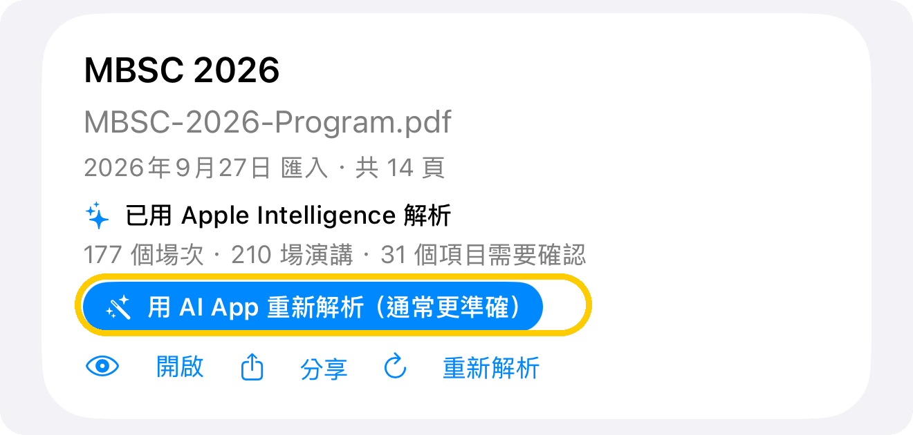
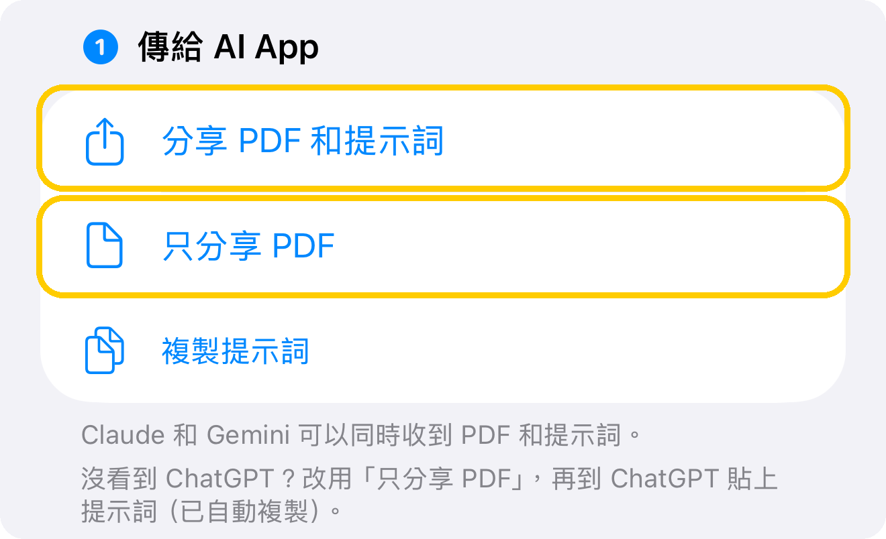
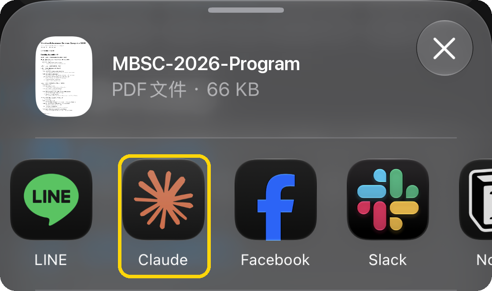
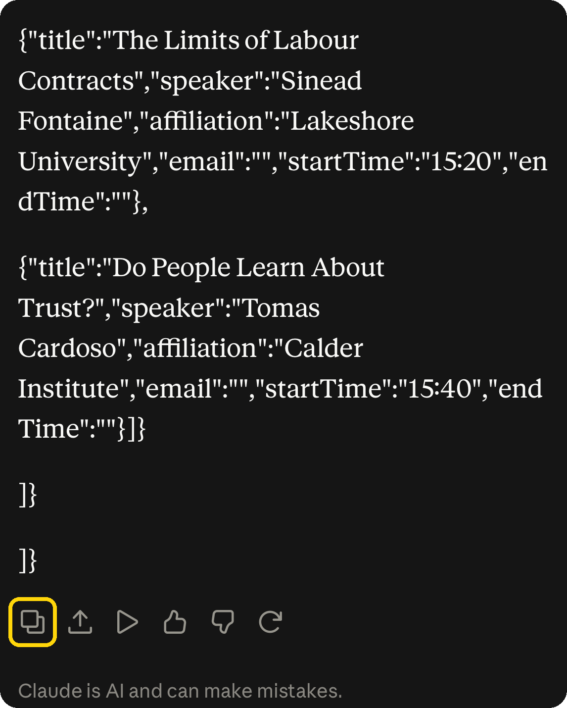
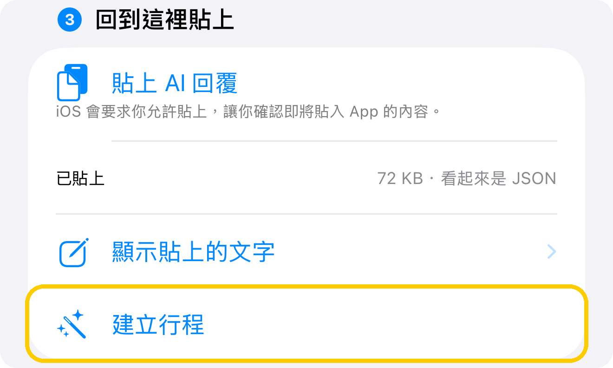
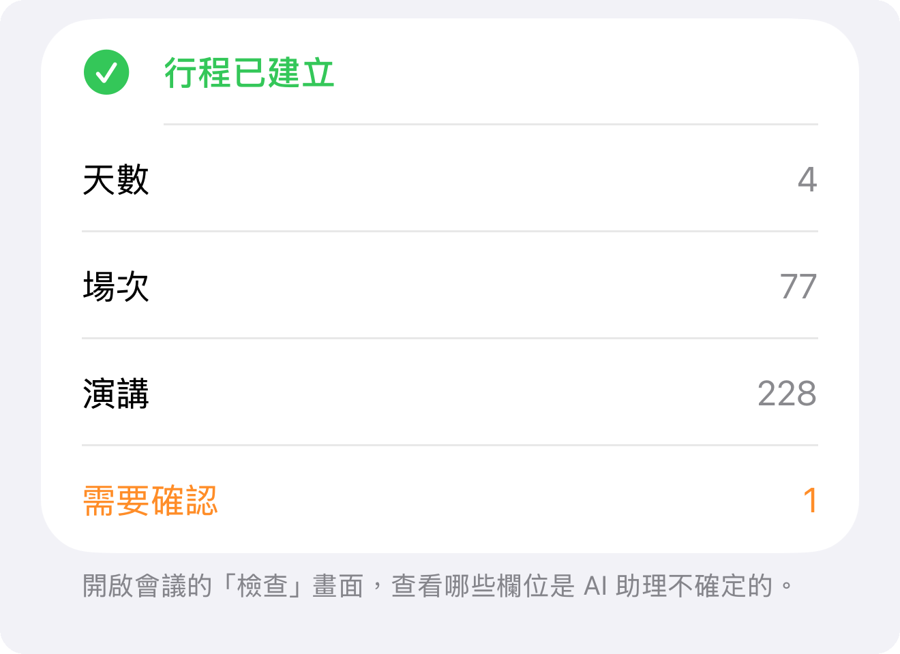
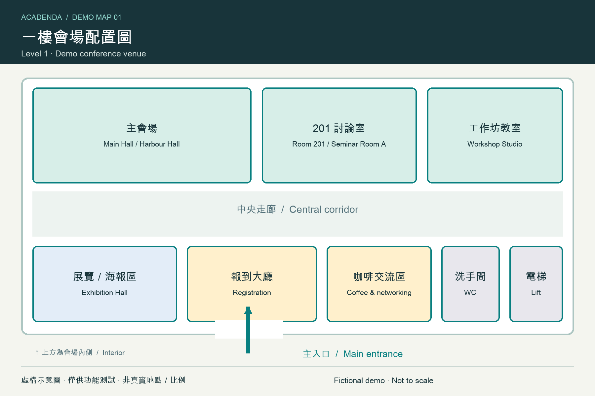
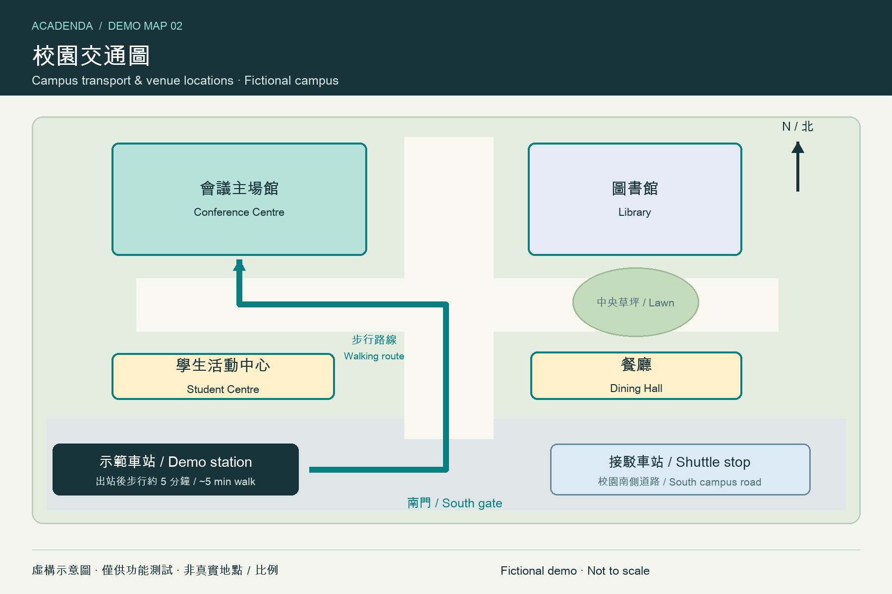

.acadenda
Open Scholarship Conference 2027
2 天 · 6 個議程項目 · 5 場演講 · 2 張地圖
完整的官方交換格式，包含格式版本、匯出時間和穩定 UUID。
ACADENDA / 約 3 分鐘 · 不需要 API 金鑰
Acadenda 會在你的裝置上解析議程。遇到版面複雜的議程，交給 ChatGPT、Claude 或 Gemini 這類 AI App 整理，結果通常更準確。整個過程大約 3 分鐘，不需要 API 金鑰，用你平常的 AI App 就可以。
截圖以 Claude 和虛構的 MBSC 2026 議程示範。點選截圖可查看完整圖片。
在「會議」分頁點右上角的「匯入」，再點「＋」，選擇主辦方提供的議程 PDF。Acadenda 會先自動解析一次。
解析完成後，在這份 PDF 下方點「用 AI App 解析」。如果用的是內建解析器，或結果看起來不完整，會直接出現藍色的按鈕。

點「分享 PDF 和提示詞」，選擇你的 AI App。PDF 會附上，提示詞會放在訊息裡，同時也會複製起來。用 ChatGPT 的話，請改點「只分享 PDF」——PDF 和提示詞一起分享時，選單裡不會出現 ChatGPT。


確認輸入框裡同時有 PDF 和提示詞，然後送出。如果只收到 PDF（用 ChatGPT 時就是這樣），在輸入框貼上提示詞就好。

AI 會回覆一大段 JSON，不用看內容。等它回覆完，按回覆下方的「複製」。如果回覆停在一半，輸入「繼續」，再全部複製。

回到 Acadenda，點「貼上」。畫面會顯示回覆的大小，並提示「看起來是 JSON」。確認後點「建立行程」。

完成後會顯示找到幾天、幾個場次、幾場演講。標示「需要確認」的項目，可以到會議的「檢查」畫面對照原始 PDF。

直接匯入 · QR CODE / 連結
掃描下方任一 QR Code，匯入附有兩張地圖的虛構會議範例。.acadenda 與 .json 兩種格式都包含「一樓會場配置圖」和「校園交通圖」，可用來測試議程匯入與會議地圖功能。
若已匯入過這份範例，請在預覽後選擇更新既有會議，再開啟「地圖」。首次載入圖片需要網路。


兩張地圖均為原創虛構示意圖，非真實地點；PNG，1800 × 1200 像素，每張小於 100 KB。
.acadenda
2 天 · 6 個議程項目 · 5 場演講 · 2 張地圖
完整的官方交換格式，包含格式版本、匯出時間和穩定 UUID。
.json
1 天 · 4 個議程項目 · 4 場演講 · 2 張地圖
精簡的相容 JSON 格式，同樣可匯入並追蹤來源網址。
每個 QR Code 的內容都是完整的 HTTPS 檔案網址。兩個下載網址會直接回傳行程檔；從連結加入後，Acadenda 也會追蹤該網址的議程更新。
遇到問題？
通常是複製到的不是完整回覆。請用 AI App 回覆下方的「複製」按鈕，不要手動選取；回覆停在一半時，先輸入「繼續」。
ChatGPT、Claude、Gemini 都可以。選能讀 PDF 的較新模型，效果最好。
Acadenda 不收費。AI App 是否收費，依你使用的方案而定。
App 在解析失敗時會說明原因：回覆沒寫完時請 AI「繼續」；不是有效的 JSON 時請 AI 重新只輸出 JSON，錯誤訊息會附上出錯的位置。